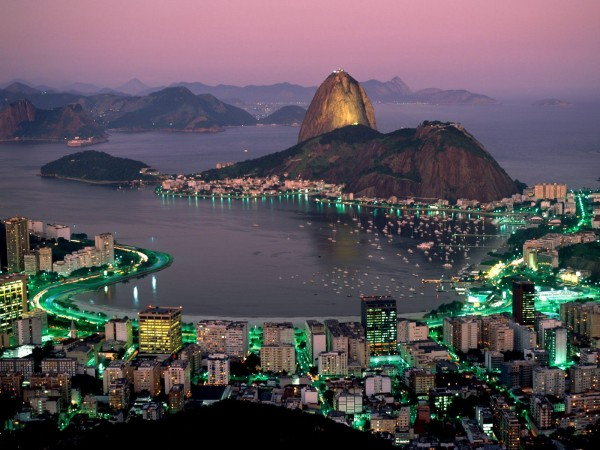

Le Corcovado
Situé dans la baie de Rio, ce mont est surmonté de la magistrale statue du Christ Rédempteur ou Cristo Redentor en brésil. D’ici aussi vous aurez donc une vue imprenable sur la ville de Rio, sa baie et le Pain de Sucre!

Baie de Rio
Surnommée le « Pain de Sucre » ou Pao de Açucar en brésilien, à cause de son drôle de piton rocheux, cette baie est sans doute La plus célèbre baie au monde.
